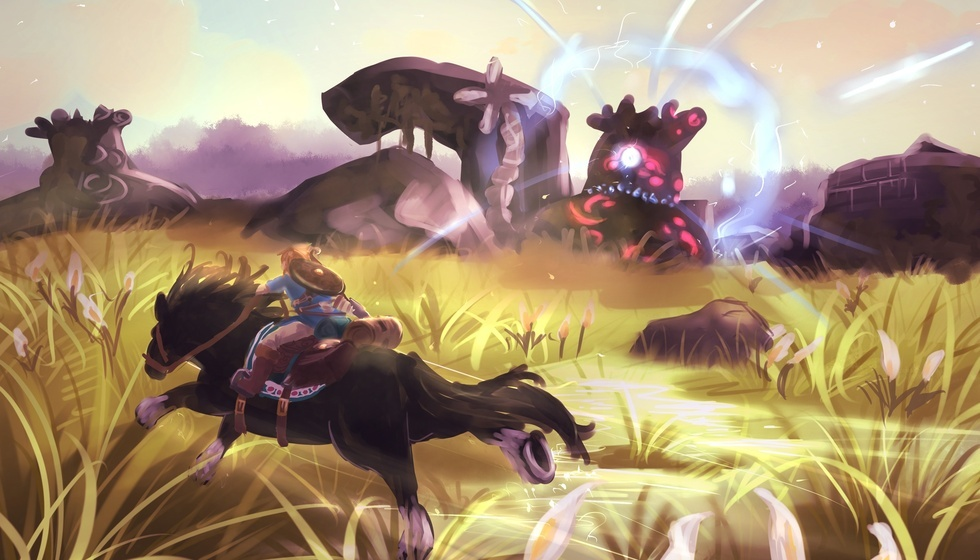
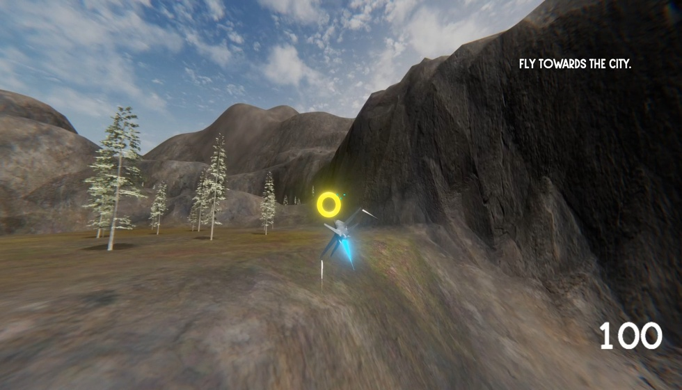

NS玩家狂喜！90年代经典A.RPG移植成功

玩家是不是总在发愁，想在主机上玩经典老款A.RPG却没渠道？最近国外大神搞了个操作，让一款90年代能跟《塞尔达传说》掰手腕的神作，成功在NS上“复活”了。想玩上这款游戏，第一步得找对资源和安装方向。这款游戏就是《圣剑传说》，移植是国外大神做的，咱们得先去作者NaGaa95的github主页拿开源程序，解压后把文件放进SD卡根目录的Switch文件夹，弹出覆盖提示直接确认就行。常折腾NS大气层系统的玩家，这两步应该顺手，新手得注意别放错文件夹，不然后面启动会出问题。
完成资源准备后，后续安装不算复杂，但版本选择得留意。剩下两步就是装nsp前端文件，然后在NS桌面启动游戏文件。目前这个移植版已经更到1.02版了，之前1.01版主要解决了存档出错、音频卡顿和Y键映射不对的问题，现在1.02版又修了分辨率高于720p时游戏崩溃的毛病，还加了屏幕虚拟摇杆，终于能顺畅调360°视角了——之前玩1.01版总因为视角问题误操作，现在总算舒服多了。
安装好游戏，这款经典A.RPG的玩法亮点不少，值得慢慢体验。主角能用八种武器和八种属性魔法，每种武器手感都不一样：斧头能砍树开路，流星锤能砸破挡路墙壁，鞭子还能勾着东西移动，解谜时特别好用；战斗时蓄满能力槽能放超必杀技，爽感很足。而且咱们能从战士、僧侣、魔法师、贤者三个职业里选一个培养，冒险路上还有剧情伙伴一起战斗，不像有些老游只能单打独斗，这种搭配玩法对喜欢组队策略的国内玩家来说，特别对胃口。

能让玩家盼着移植，这款游戏的历史底蕴不简单，发展历程里藏了不少故事。史克威尔1991年就给GB主机做了这款游戏，当时还叫《最终幻想外传》，画面是黑白的。受当年容量限制，很多有意思的想法没实现，但即便这样，它还是被玩家当成能和《塞尔达传说》比肩的作品。后来在SFC上出了二代，才算正式定名《圣剑传说》，和《最终幻想》这些名作并列，成了史克威尔的王牌系列。不少国内玩家当年玩PSV、安卓或ios版的3D重制版时，就已经被它圈粉了。
不过目前这个NS移植版有个小遗憾——中文支持的问题，但也有临时解决办法。想切日文的话，找switch/aom/config.txt文件，把language 1改成language 0就行，就是没中文玩着还是费劲。【独家观点植入】国内主机玩家对游戏中文本地化的需求真的太高了，之前有些经典老RPG，没汉化时根本没人敢碰，汉化后玩家社区讨论量直接翻好几倍，热度一下就起来了。这次《圣剑传说》NS移植版要是有民间汉化团队接手，肯定能让更多玩家愿意尝试，毕竟只有语言通畅，咱们才能好好沉浸在剧情里，感受主角对抗帝国、拯救世界的故事，不然光靠猜剧情，再好玩的玩法也打折扣，这也是很多老游在国内“翻红”的关键。而且看国内NS玩家的特点，大家既想方便玩经典老游，又在意成本，这次通过开源程序移植，虽然得自备游戏ROM，但比买其他平台正版重制版省钱，不过也得注意版权问题。很多玩家其实都在“便捷体验”和“版权合规”之间纠结，说到底还是国内经典老游的正版化渠道太少了，要是官方能多把这些老神作引进来，谁还愿意折腾移植版呢？
总的来说，这款能比肩《塞尔达传说》的经典A.RPG成功移植到NS，对喜欢老游的玩家是个难得的好消息，虽然现在没中文，但相信后面会有汉化大神关注到。大家要是已经装了玩过，不妨在评论区分享下游戏体验；还没装的朋友，也可以说说最期待游戏汉化后的哪个部分。关注我，后续还会带来更多NS平台经典游戏的消息！
关于我们
📱 公众号名称：三天游戏
✍️ 作者：曾三天
扫码关注公众号，获取每日最新资讯

商务合作与版权
商务合作 / 内容投稿 / 品牌推广
请关注公众号「三天游戏」后台留言联系
版权声明：本文由作者整理，转载需注明出处。